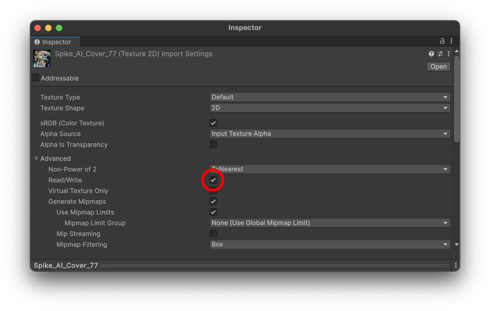
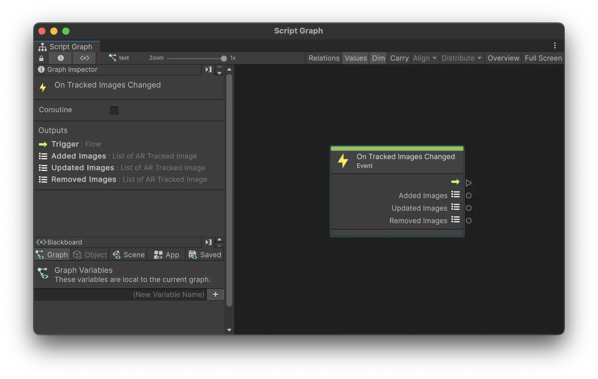

Image Tracking
Meadow allows you to create experiences that are triggered by images. This is a way to create interactive XR experiences that are triggered by posters, paintings, or any other image.
Import and Prepare Images
The images you want to track need to be imported into your experience and included in your asset bundle.
- Import the images you want to track into your project. Make sure to only use
.pngor.jpgimages. Please note.jpegimages are not supported, just change the extension to.jpg. - Make sure to enable the
Read/Writeoption in the import settings for the images.
Please note that you should not create a Reference Image Library in Unity. Meadow will create this automatically when you upload your experience.

Add the Tracked Images component
The TrackedImages components allows you to place prefabs on top of images.
- Add the
TrackedImagesprefab to your main prefab. It can be on any GameObject. - For each image you want to track, add a new entry to the
Image Prefab Pairslist. - Assign the image you want to track to the
Imagefield. - Assign the prefab you want to place on top of the image to the
Prefabfield. - Specify the
Sizeof the image in meters. This is the size of the image in the real world. For example an A4 is 0.21 x 0.297 meters. - Toggle
Update PositionandUpdate Rotationto update the position and rotation of the prefab when the image is moving.

Using Visual Scripting Event OnTrackedImagesChanged
You can also use visual scripting to trigger logic when an image is tracked for more granular control.
Parameters:
- Added Images:
List<ARTrackedImage>- New images added to the tracked images list since the last event. - Updated Images:
List<ARTrackedImage>- Images that have been updated. - Removed Images:
List<ARTrackedImage>- Images that have been removed from the tracked images list.

Common Issues
Instantiated Prefab Transform
Make sure the position of the prefab is set to 0, 0, 0, to place it in the middle of the image that is being tracked.
Also, make sure the scale is set to something that the user can see. If the prefab is very large the user will not see it as it is instantiated since they are standing inside of it. For example, if the user is standing 1 meter away from the image that is tracked, and the prefab is larger than 1 meter in size, the user might not see it.
Image is not recognized
Make sure that the image is set to Read/Write enabled in the import settings.